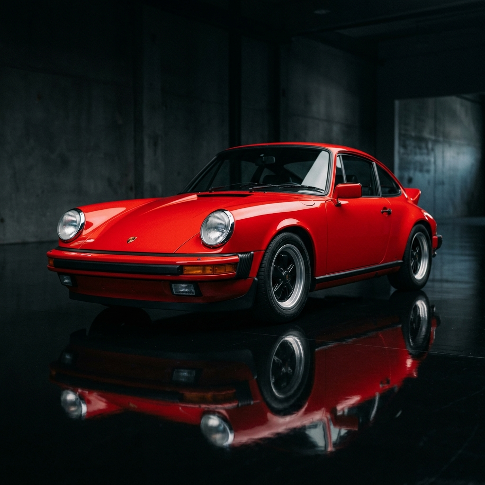
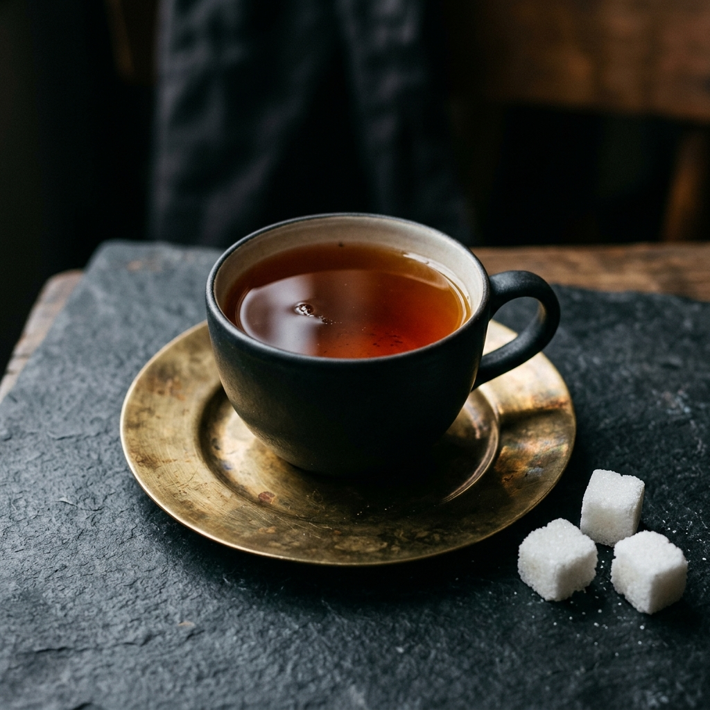
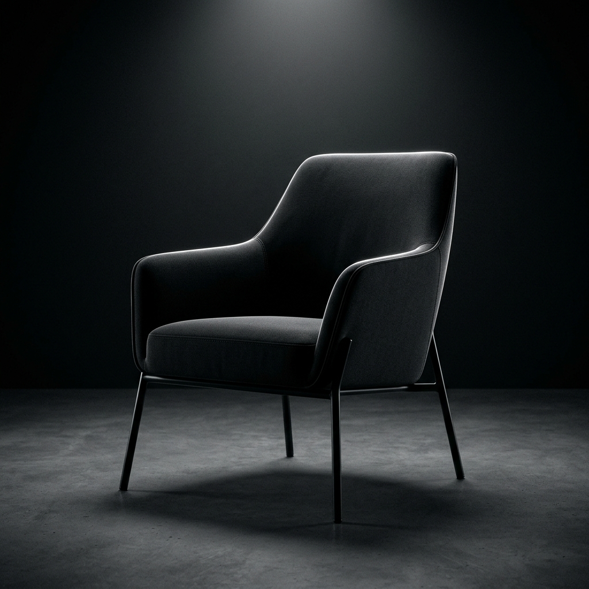
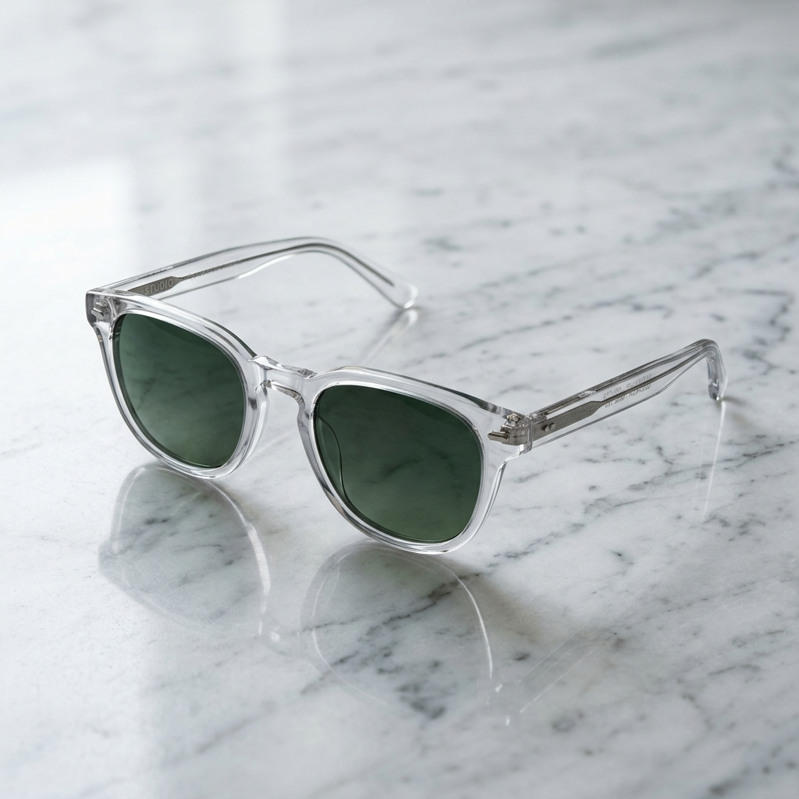
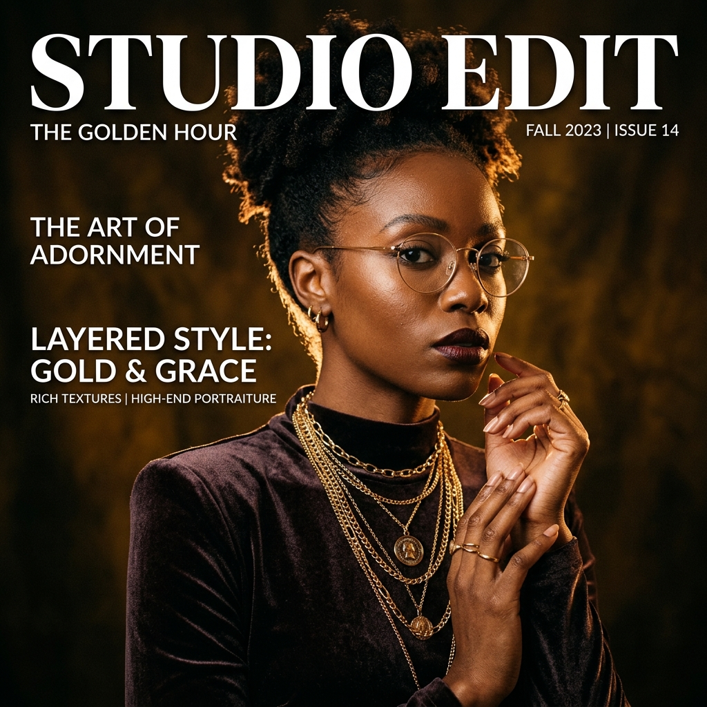
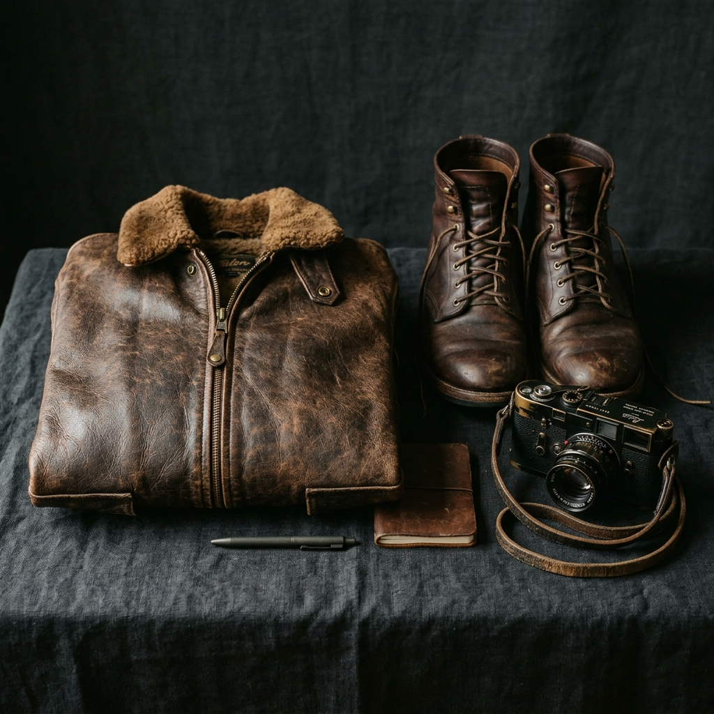

Photography That Tells Your Story
A curated portfolio of portraits, moments, and visual storytelling. Let's capture something real.






Club Masterclasses & Workshops
Develop your technical precision, light manipulation, and visual storytelling through guided mentor sessions.
The Exposure Triangle
Demystify aperture, shutter speed, and ISO. Master manual mode shooting to balance depth of field, motion blur, and clean noise profiles.
Golden Hour & Portraiture
Techniques for rim lighting, natural diffusion, 5-in-1 reflectors, and subject framing to achieve editorial magazine-grade portraits.
Cinematic RAW Color Grading
Lightroom tone curves, HSL sliders, split toning, and preserving dynamic range to produce cohesive editorial aesthetics.
Student Gear & Lens Essentials
Equipment advice vetted for student budgets, whether you're shooting mirrorless, DSLR, or 35mm film.
The "Nifty Fifty" Prime
Why an affordable 50mm f/1.8 lens is every photographer's indispensable secret weapon for low light and shallow depth of field.
CPL & ND Glass Filters
Cut harsh glass and water reflections with Circular Polarizers, and execute silky long exposures in midday sun with Neutral Density filters.
Tripods & Shutter Release
Eliminate camera shake for night cityscapes, astrophotography, and light trails with sturdy three-section carbon fiber or aluminum supports.